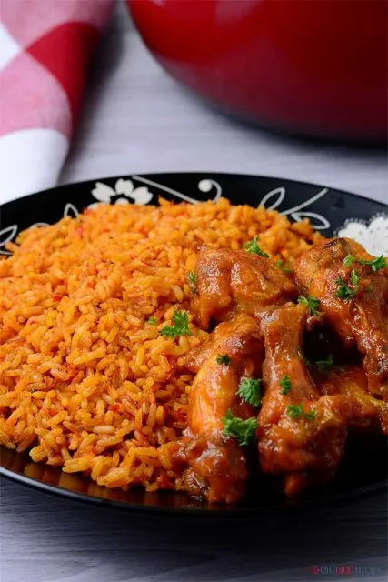

Jollof Rice

Jollof rice is a West African dish that's a staple in most households. Eaten far and wide in Nigeria, Cameroon, Ghana, liberia, Togo and Sierra Leone. It definitely was a staple in my house growing up, and at parties, where you can be rest assured that there will be pots and pots of it. My number one reason for attending Nigerian parties, looll.
Nigerian Jollof Rice or Jellof Rice is a rich and incredibly tasty west African one-pot meal. It is a very versatile dish, and it is usually made from Rice, Tomatoes, Pimento peppers, Tomato paste, Scotch bonnet(ata rodo), Onions, Salt, and other spices.
How to make Nigerian Jollof Rice
When cooking Jellof rice, building a flavor base is very
important. Don't be in haste to dump your ingredients in the pot otherwise
you will end up with what we call concotion
. Each steps counts so try to
do each of the steps in detail.
Ingredients
- 1 medium sized onion, finely diced, set aside
- 2 1/2 of chicken broth
- 1 tsp salt to taste
- 1/4 cup ofcooking oil
- 2 red bell pepper(pimento)
- 2 cups of rice, rinsed and strained
- 5 medium sized tomatoes
- 12 scotch bonnet peppers (habanero)
- 3 tbsp tomato paste
- 1/2 tsp curry powder
- 1/2 tsp thyme
- 1 tsp all purpose seasoning
- 1 chicken flavor stock cube
- 1 small sized ginger and garlic, peeled and grated
- 3 bay leaves
- Water, as needed
- Parsley, for garnishing
Instructions
-
Not certain what you need? See
- Wash, rinse and blend your tomatoes, red pepper, scotch bonnet pepper in a food processor or blender till it is well blended.
- In a medium sized pot, heat your oil on medium heat. Once the oil is heated add the onions, ginger and garllic and fry for about 5 minutes. Once it is a bit brown, add the tomato paste and fry for 3 minutes.
- Add the blended pepper mixtureand fry with the onions for about 10 minutes. Make sure you stir consistently with a ladle so the pepper mixture doesnt burn.
- After about 10 minutes, turn the heat down to medium, add the chicken broth. Stir and add the seasonings (salt, curry powder, thyme, all purpose seasoning, and the Chicken flavor cube). allow to boil for 2 minutes.
- Add the strained rice to the pot. Mix into the pepper stew. At this point, if needed water can be added so the rice is level with the pepper mixture/ chicken stock. Add the bay leaves, cover the pot and cook on medium to low heat for 15 - 30 minutes.
- When the liquid has completely dried up, turn off the heat, mix thoroughly. garnish with a stalk of parsley and your Jellof rice is ready to be consumed!
Servings:
This delicious rice dish can be served with just about any meat or non-meat recipes that you like. You can start with these few below and then explore with other recipes to pair with this belly filling dish: